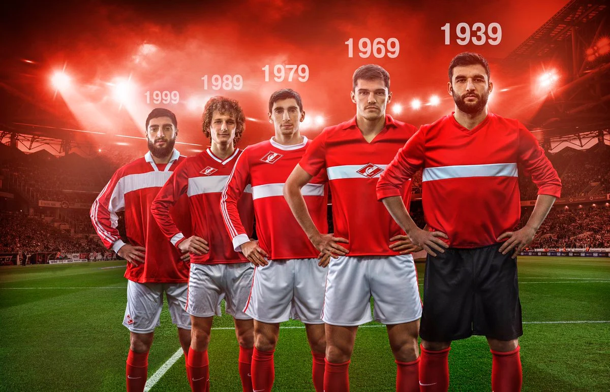
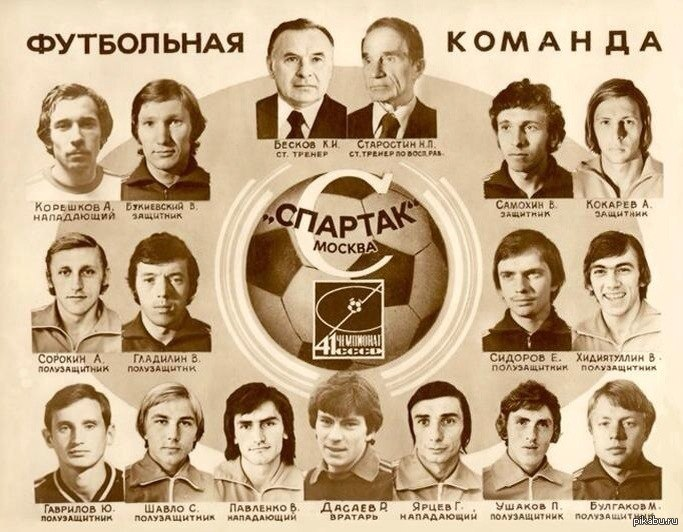
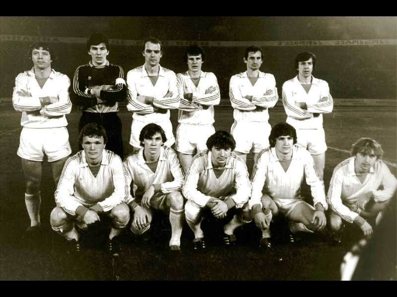

СОВЕТСКАЯ ЭПОХА
19 апреля 1935 года соответствующие органы официально объявили о создании спортивного общества «Спартак». Был принят устав, эмблема, форма красного цвета с белой полоской шириной 8,5 см, проходящей по груди спине. Интересно, что символику клубу придумал сам его основатель Николай Старостин. В день принятия названия он за пару минут нарисовал на обычном листке бумаги букву «С» внутри ромбика с диагональной белой полоской. Атрибутика в несколько измененном виде сохраняется до сих пор, фактически это лейбл «Спартака», хранящий традиции.